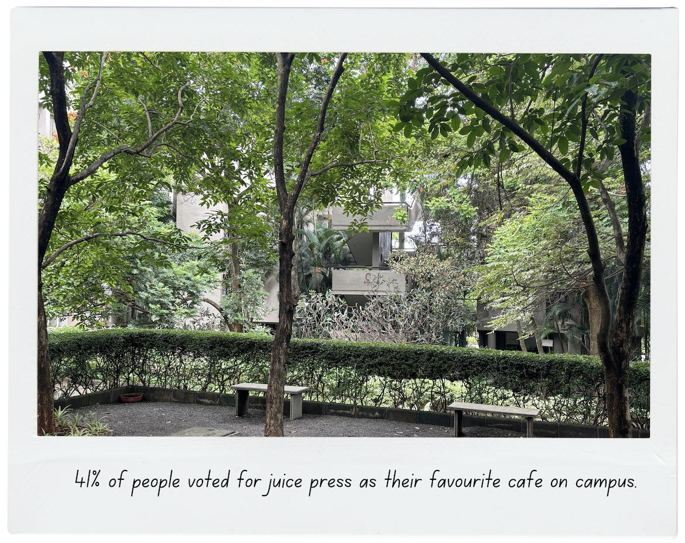

CAFÉ STATS
based on survey results from students of FLAME
A CROWD FAVOURITE!

41% of people voted for Juice Press as their favorite café on campus.
23.4% of people voted for Hashtag
9.4% of people voted for Centre Stage
HEALTH MATTERS
80% of people think Juice Press has the healthiest food.
6.3% of people voted for Hashtag
6.3% of people voted for Coffee Nation
YOUNG, (DUMB), BROKE
80% of people think Juice Press has the cheapest food.
10.9% of people voted for Charlie's
6.3% of people voted for Centre Stage
A CUP OF COFFEE FOR YOUR HEAD
61% of people voted for Coffee Nation having the best coffee.
14.8% of people voted for Korebi
10.9% of people voted for Charlie's
THE BEST OF THE BEST
71.7% chose Hashtag fries as their favorite!
35% chose Juice Press Maggi as their favorite!
41.1% chose Centre Stage sandwiches as their favorite!